산업안전기사 (2004-05-23 기출문제)
1과목: 안전관리론
1. A현장의 '98년도 재해건수는 24건, 의사진단에 의한 휴업 총일수는 3650일 이었다. 도수율과 강도율을 각각 구하면? (단, 1인당 1일 8시간, 300일 근무하며 평균근로자 수는 500명 이었음.)
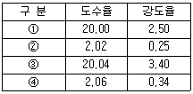
- ①
- ②
- ③
- ④
(정답률: 55%)

2. 빈도율이 11.65인 사업장의 연천인율은?
- 23.96
- 25.76
- 27.96
- 30.36
(정답률: 71%)
3. 안전조직을 설명한 것 중 Line-Staff에 해당되는 것은?
- 조언이나 권고적 참여가 혼동된다.
- 안전과 생산은 별도로 생각한다.
- 안전에 대한 정보가 불충분하다.
- 안전책임과 권한이 생산부분에는 없다.
(정답률: 68%)
4. 다음은 리더의 의사결정 과정을 연결시킨 것이다. 알맞는 것은?
- 권위주의적 리더 - 집단중심
- 민주주의적 리더 - 종업원 중심
- 방임주의적 리더 - 집단중심
- 민주주의적 리더 - 집단중심
(정답률: 60%)
5. 다음 재해누발자의 유형 중 상황성 누발자와 관련이 없는 것은?
- 작업이 어렵다.
- 기능 미숙이다.
- 심신에 근심이 있다.
- 기계설비에 결함이 있다.
(정답률: 32%)
6. 안전율(安全率) 개념에 맞지 않는 것은?
- 안전율이란 안전신뢰도를 말한다.
- 안전율은 경험적 요소에 대한 기술적 배려다.
- 인간의 의지적 행동을 저해하는 우연성을 감안한 것이다.
- 안전율은 비경제적 요인이므로 생산과 시설 보존상 모순된다.
(정답률: 81%)
7. 안전 태도 교육의 기본 과정에 포함되지 않는 것은?
- 청취(hearing)
- 훈계(admonition)
- 평가(evaluation)
- 이해(understand)
(정답률: 88%)
8. 안전심리를 결정하는 5대 요소가 아닌 것은?
- 습관
- 동기
- 감정
- 지능
(정답률: 74%)
9. 다음 중 정신력과 관련이 있는 생리적 현상과 거리가 먼 것은?
- 육체적 능력의 초과
- 인내력 부족
- 신경 계통의 이상
- 근육 운동의 부적합
(정답률: 31%)
10. 인간 행동의 함수 관계를 나타내는 레윈(K.Lewin)의 공식 B = f( PㆍE )에 대하여 가장 올바른 설명은?
- 인간의 행동은 환경과의 함수관계이다.
- B는 행동, f는 행동의 결과로서 환경 E의 산물이다.
- B는 목적, P는 개성, E는 자극을 뜻하며 행동은 어떤 자극에 의해 개성에 따라 나타나는 함수 관계이다.
- B는 행동, P는 자질, E는 환경을 뜻하며 행동은 자질과 환경의 함수 관계이다.
(정답률: 74%)
11. 버드의 재해구성 비율 1:10:30:600 중 10은 무엇을 나타내는가?
- 중상
- 경상(물적, 인적사고)
- 무상해사고(물적손실)
- 무상해 무사고(위험순간)
(정답률: 71%)
12. 다음 도수율 공식 중 괄호 안에 알맞는 것은?
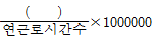
- 재해자수
- 재해발생건수
- 근로손실일수
- 안전활동건수
(정답률: 71%)
13. 산업안전 표지 중 다음 보기가 나타내는 뜻으로 옳은 것은?
- 폭발물 경고
- 유해물질 경고
- 위험장소 경고
- 독극물 경고
(정답률: 80%)
14. 안전을 근원적으로 확보하기 위한 전략으로서 외부의 자극과 인간의 기대가 서로 모순되지 않아야 하는 것을 무엇이라 하는가?
- 중복성(redundancy)
- 일관성(consistency)
- 양립성(compatibility)
- 표준화(standardization)
(정답률: 65%)
15. 다음은 차광보호구의 조건을 설명하였다. 잘못 설명한 것은?
- 취급이 간단하며 렌즈의 탈락 기타 파손이 발생되지 않을 것
- 필터렌즈, 필터플레이트의 색깔은 무채색 또는 순수한 황적, 황록, 녹, 청록 등이 좋다는 것
- 고글형 중 1안형의 것은 시계가 1⑤도 이상이며, 통기성이 양호할 것
- 커버렌즈 및 커버플레이트의 시감 투과율이 79％ 이상일 것
(정답률: 64%)
16. OJT 안전교육의 4단계법 중 1단계는?
- 작업을 배우고 싶다는 기분을 갖게 한다.
- 작업을 설명한다.
- 중요점을 강조한다.
- 시켜본다.
(정답률: 72%)
17. 다음 중 억측판단이 발생하는 배경에 해당되지 않는 것은?
- 정보가 불확실할 때
- 희망적인 관측이 있을 때
- 뻔뻔스런 기분이 들 때
- 과거의 경험한 선입관이 있을 때
(정답률: 67%)
18. 매슬로우(Maslow)의 욕구체계에 있어서 자신있고 강하고 무엇인가 진취적이며 유능한 쓸모있는 사람으로 인식되기를 바라는 욕구는?
- 생리적 욕구
- 사회적 욕구
- 안전의 욕구
- 존경의 욕구
(정답률: 58%)
19. "유기체에 자극을 주면 반응함으로써 새로운 행동이 발달된다."는 S-R 연구 이론을 제시한 사람은?
- 스키너(Skinner)
- 홀(Hull)
- 레윈(Lewin)
- 파블로브(Pavlov)
(정답률: 48%)
20. 교육방법 중 실제의 장면이나 상태와 극히 유사한 사태를 인위적으로 만들어 그 속에서 학습하도록 하는 교육방법은?
- 실연법
- 프로그램 학습법
- 시범
- 모의법
(정답률: 53%)
2과목: 인간공학 및 시스템안전공학
21. 일반적으로 재해 발생 간격은 지수분포를 따르며, 일정기간 내에 발생하는 재해발생 건수는 Poisson분포를 따른다고 알려져 있다. 이러한 확률변수들의 발생과정을 무엇이라 하는가?
- Poisson 과정
- Bernoulli 과정
- Wiener 과정
- Normal 과정
(정답률: 59%)
22. 작업환경의 온열요소에 해당되지 않는 것은?
- 기습(humidity)
- 기온(temperature)
- 기류(air movement)
- 증발열(evaporation heat)
(정답률: 43%)
23. 평균신장을 측정하기 위해 추정의 오차범위를 ±10%로 하면 피측정자의 수는 몇 명 정도가 되어야 하는가? (단, 신뢰계수는 2, 모표준편차는 5로 한다)
- 5,000명
- 10,000명
- 15,000명
- 20,000명
(정답률: 55%)
24. 다음 집합 관계식 중 틀린 것은?
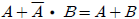
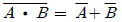
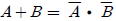
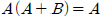
(정답률: 31%)
25. 다음 중 위험성을 예측 평가하는 단계가 바르게 나열된 것은?
- 위험성 도출 - 위험성 평가 - 위험성 관리
- 위험성 관리 - 위험성 평가 - 위험성 도출
- 위험성 평가 - 위험성 도출 - 위험성 관리
- 위험성 관리 - 위험성 도출 - 위험성 평가
(정답률: 51%)
26. 결함수 분석법에 관한 설명이다. 틀린 것은?
- 컴퓨터처리는 불가능하다.
- 정량적으로 재해 발생 확률을 구한다.
- 재해 확률의 목표치는 정하여야 한다.
- 재해 발생의 원인들을 Tree상으로 표현할 수 있다.
(정답률: 57%)
27. 시스템의 신뢰도 중에 고장 원인의 기여율이 가장 낮은 것은?
- 부품
- 설계
- 제품
- 사용
(정답률: 38%)
28. 인간의 신장이나 체중은 하루 중 시간의 경과와 함께 변화한다. 신장의 경우 하루 중 언제 측정하여야 가장 큰 키를 얻을 수 있는가?
- 기상 직후
- 아침 식사 30분 후
- 점심 때 쯤
- 오후 5시경
(정답률: 63%)
29. 인간-기계 시스템(Man-machine system)의 인간공학적 설계상의 문제로 발생하는 인간 error의 원인이 아닌 것은?
- 식별하기 어려운 표시기기와 조작구
- 표시기기와 조작구의 양립성 결여
- 의미를 알기 어려운 신호형태
- 작업의 흐름에 따른 배치
(정답률: 64%)
30. 양팔을 뻗지 않은 상태에서 작업하는데 사용하는 공간을 무엇이라 하는가?
- 정상 작업파악한계
- 정상 작업포락면
- 작업 공간파악한계
- 작업 공간포락면
(정답률: 38%)
31. 일반적으로 완전 암조응에 걸리는 시간은?
- 5 ~ 10분
- 10 ~ 20분
- 30 ~ 40분
- 50 ~ 60분
(정답률: 62%)
32. 산업재해 발생의 배경에 대한 설명 중 잘못된 것은?
- 작업환경과 개인의 잘못간의 연쇄성
- 재해관련 직ㆍ간접비용 발생의 법칙성
- 물적원인과 인적원인 발생 상호간의 단속성
- 준 사고(near miss)와 중대사고의 발생 비율간의 법칙성
(정답률: 36%)
33. 눈과 글자의 거리가 28cm, 글자의 크기가 0.2cm, 획폭은 0.03cm일 때 시각은 얼마인가?
- 0.007
- 0.001
- 3.68
- 24.55
(정답률: 36%)
34. 다음과 같은 실내 공간에서 반사율이 낮은 면에서 높은 순으로 올바르게 나열된 것은?
- 바닥 - 창문 - 가구 - 벽
- 바닥 - 가구 - 벽 - 천정
- 창문 - 바닥 - 가구 - 벽
- 벽 - 천장 - 가구 - 바닥
(정답률: 69%)
35. FTA에서 시스템의 기능을 살리는데 필요한 최소한의 요인의 집합을 무엇이라 하는가?
- Boolean indicated cut set
- minimal gate
- minimal path
- critical set
(정답률: 75%)
36. 실효온도(effective temperature : ET)의 종류에 해당되지 않는 것은?
- Oxford지수
- 습구 글로브온도
- Botsball지수
- 열지수(heat index)
(정답률: 33%)
37. 7개의 기기로 구성된, 다음 그림과 같은 시스템이 있다. 모든 기기가 동일하게 신뢰도가 0.8이다. 이 시스템의 신뢰도는 얼마인가?
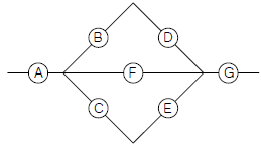
- 0.5121
- 0.6234
- 0.7325
- 0.9740
(정답률: 45%)
38. 어떤 전자기기의 수명은 지수분포를 따르며, 그 평균수명은 10000시간이라고 한다. 이 기기를 계속 사용하였을 때 10000시간 동안 고장 없이 작동할 확률은?
- 1 - e-1
- e-1
- 1/2
- 1
(정답률: 36%)
39. FTA의 활용에 따른 기대효과가 아닌 것은?
- 사고원인 규명의 간편화
- 사고원인 분석의 정성화
- 사고원인 분석의 일반화
- 노력과 시간의 절감
(정답률: 42%)
40. 다음 중 진동의 영향을 가장 많이 받는 인간성능은?
- 감시(monitoring)작업
- 반응시간(reaction time)
- 추적(tracking)능력
- 형태식별(pattern recognition)
(정답률: 50%)
3과목: 기계위험방지기술
41. 기계설비의 이상시에 기계를 급정지시키거나 안전장치가 작동되도록 하는 소극적인 대책과 전기회로를 개선하여 오동작을 방지하거나 별도의 완전한 회로에 의해 정상기능을 찾을 수 있도록 하는 것은?
- 구조부분의 안전화
- 기능적 안전화
- 본질적 안전화
- 외관상의 안전화
(정답률: 63%)
42. 하물중량이 200kg, 지게차의 중량이 400kg, 앞바퀴에서 하물의 중심까지의 최단거리가 1m이면 지게차가 안정되기위한 앞바퀴에서 지게차의 중심까지의 최단 거리는?
- 0.2m 초과
- 0.5m 초과
- 1m 초과
- 3m 이상
(정답률: 65%)
43. 축의 설계시 주의할 점이 아닌 것은?
- 변형
- 강도
- 회전방향
- 열응력
(정답률: 39%)
44. 둥근톱의 톱날직경이 600mm일 경우 분할날의 최소길이는?
- 300mm
- 314mm
- 400mm
- 420mm
(정답률: 39%)
45. 보일러의 안전장치에 속하지 않는 것은?
- 압력 방출장치
- 비상 정지장치
- 압력 제한 스위치
- 고ㆍ저 수위 조절 장치
(정답률: 58%)
46. 다음 중 기계적, 재료적인 결함에 의한 위험성은?
- 기계의 불충분
- 방호의 불충분
- 조명의 불충분
- 설계의 불충분
(정답률: 58%)
47. 드릴링 작업에서 일감의 고정방법을 설명한 것이다. 옳지 않는 것은?
- 일감이 작을 때는 바이스로 고정한다.
- 일감이 작고 길 때에는 플라이어로 고정한다.
- 일감이 크고 복잡할 때에는 볼트와 고정구로 고정한다.
- 대량생산과 정밀도를 요할 때에는 지그로 고정한다.
(정답률: 49%)
48. 동력 전도 부분의 전방 30cm 위치에 일방 평행 보호망을 설치하고자 한다. 보호망의 최대 개구 간격은 얼마로 하여야 하는가?
- 36 mm 이하
- 37.5 mm 이하
- 51 mm 이하
- 56 mm 이하
(정답률: 27%)
49. 프레스작업을 할 때에 해당 작업시작 전 점검항목이 아닌 것은?
- 금형 및 고정볼트의 상태
- 칼날 및 테이블의 평형상태
- 클러치 및 브레이크의 기능
- 급정지 및 비상정지 장치의 기능
(정답률: 33%)
50. 다음의 재료 실험 중 비파괴 시험이 아닌 것은?
- 방사선 투입시험
- 자기탐상시험
- 초음파 탐상시험
- 피로 시험
(정답률: 73%)
51. 프레스 금형 안에 부품을 손으로 넣고 빼내는 구조이면 부품 송급시 수공구가 활용된다. 이 수공구에 해당되지 않는 것은?
- 핀셋트류
- 슈트
- 플라이어류
- 자석공구류
(정답률: 60%)
52. 프레스의 위험성에 대해 기술한 내용 중 잘못된 것은?
- 부품의 송급⋅배출이 핸드 인 다이로 이루어지는 것은 작업시 위험성이 크다
- 마찰식 클러치 프레스의 경우 하강중인 슬라이드를 정지시킬 수 없어서 기계자체 기능상의 위험성을 내포하고 있다.
- 일반적으로 프레스는 범용성이 우수한 기계지만 그에 대응하는 안전조치들이 미비한 경우가 많아 위험성이 높다.
- 신체의 일부가 작업점에 노출되면 절단ㆍ협착 등의 재해를 당할 위험성이 매우 높다.
(정답률: 64%)
53. 선반작업에 관한 다음 설명 중 옳지 않는 것은?
- 일감의 길이가 직경의 8배 이상일 때에는 방진구를 사용한다.
- 편심물을 가공할 때에는 무게밸런스를 잘 맞춘다.
- 보링 작업중에는 chip을 제거하지 않는다.
- 샌드페이퍼 작업시에는 한 손으로 감싸쥐지 않는다.
(정답률: 58%)
54. 산업용 로봇의 가동영역 내에서 교시작업을 행할 때 취해야 할 조치사항이 아닌 것은?
- 작업 중의 매니퓰레이트 속도를 정한다.
- 작업자가 이상을 발견할 시는 안전담당자가 올 때 까지만 로봇운전을 계속한다.
- 작업을 하는 동안 기동스위치에 타작업자가 작동시킬 수 없도록 작업중 표시를 한다.
- 2인 이상의 근로자에게 작업을 시킬 때의 신호방법을 정한다.
(정답률: 70%)
55. 다음 중 베어링 메탈(bearing metal)로 사용되지 않는 것은?
- 청동
- 켈밋
- 침탄강
- 화이트 메탈
(정답률: 32%)
56. 포크리프트(folk lift) 운전 중의 주의사항으로 틀린 것은?
- 허용 하중이나 높이를 초과하는 적재는 하지 말 것
- 운전자 외에 한 사람은 탑승할 수 있다.
- 급격한 후진은 피할 것
- 견인시에는 반드시 견인봉을 사용할 것
(정답률: 76%)
57. 경사컨베이어에 있어서 무부하마력(N1), 수평부하마력(N2), 수직부하마력(N3)라 할 때 상호관계에 어떤 식이 성립되는가?
- N2 ＞ N1 + N3
- N2 ＜ N1 + N3
- N3 ＞ N1 + N2
- N3 ＜ N1 + N2
(정답률: 52%)
58. 두께 1mm이고 치폭이 1.3mm인 목재가공용 둥근톱의 반발예방장치 분할날의 두께(t)는?
- 1.1 ≦ t < 1.3
- 1.3 ≦ t < 1.5
- 0.9 ≦ t < 1.1
- 1.5 ≦ t < 1.7
(정답률: 64%)
59. 기계설비에서 왕복운동을 하는 운동부와 고정부 사이에 형성되는 기계의 위험점으로 적합한 것은?
- 끼임점
- 절단점
- 물림점
- 협착점
(정답률: 52%)
60. 가스용접 작업시 일어나는 현상인 산소가 반대로 흐르는 원인으로 적합하지 않는 것은?
- 팁의 막힘
- 노즐의 불결
- 팁과 모재의 접촉
- 토오치의 기능불량
(정답률: 31%)
4과목: 전기위험방지기술
61. 전압이 높으면 근접을 피해야 하는데 22[kV]에서의 접근 허용거리[cm]는?
- 30
- 45
- 60
- 90
(정답률: 40%)
62. 방폭전기기기의 선정시 고려사항에서 제외될 항목은?(문제 오류로 실제 시험에서는 모두 정답 처리 되었습니다. 여기서는 1번을 누르면 정답 처리 됩니다.)
- 가스 등의 발화온도
- 설치될 지역의 방폭지역 등급 구분
- 주변온도, 습도, 먼지, 표고 등의 환경조건
- 압력, 유입, 안전증 방폭구조의 경우 최고 표면온도
(정답률: 61%)
63. 정전 작업시 작업전 조치 사항이 아닌 것은?
- 검전기로 충전 여부를 확인한다.
- 단락 접지 상태를 수시로 확인한다.
- 전력 케이블은 잔류 전하를 방전한다.
- 전로의 개로 개폐기에 시건장치 및 통전금지 표지판 설치한다.
(정답률: 57%)
64. 직접접촉에 의한 감전방지 방법이 아닌 것은?
- 충전부가 노출되지 않도록 폐쇄형 외함구조로 할 것
- 충전부에 방호망 또는 절연덮개를 설치할 것
- 충전부는 출입이 용이한 장소에 설치할 것
- 충전부는 내구성이 있는 절연물로 감쌀 것
(정답률: 77%)
65. 다음의 회로에서 완전누전하고 있는 전기기기의 외함에 사람이 접촉했을 경우 인체에 흐르는 전류(Im)는? (단, E:전원의 대지전압[V], R2:제2종 접지저항치[Ω], 변압기의 위치에서 1선 접지 R3:제3종 접지저항치[Ω], 사용기기 외함의 접지 RL:전기기기가 절연불량이 되었을 때의 저항치[Ω] Rm:인체저항[Ω])
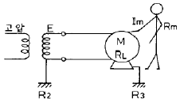
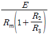
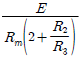
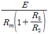
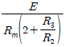
(정답률: 46%)
66. 교류 아크 용접기의 보조변압기에 2차 전압은 몇 V이하로 하는가?
- 100
- 70
- 50
- 25
(정답률: 56%)
67. 다음 기기 성능 중 부하에서 차단이 가능한 개폐기는?
- OLB
- PF
- DS
- LS
(정답률: 34%)
68. 작업장에 필요한 평균 조도E[lux]를 얻기 위한 조명설비를 시설하려고 한다. 감광보상률을 D, 방의 면적을 A[m2] 조명률을 U라 할 때 소요 총광속 F를 나타내는 식은?
- EDU/A
- UAD/E
- EAD/U
- EAU/D
(정답률: 37%)
69. 폭발의 기본조건이 아닌 것은?
- 인화성가스 또는 증기의 존재
- 위험분위기 조성
- 최소 착화에너지 이상의 점화원 존재
- 전기설비의 안전도 증가
(정답률: 65%)
70. 다음 중 전기화재시 소화에 부적합한 소화기는?
- 사염화탄소 소화기
- 분말 소화기
- 산알칼리 소화기
- CO2 소화기
(정답률: 50%)
71. 내압방폭구조에서 안전간극(safe gap)을 적게 하는 이유는?
- 최소점화에너지를 높게 하기 위하여
- 폭발화염이 외부로 유출되지 않도록 하기 위해
- 폭발압력에 견디고 파손되지 않도록 하기 위해
- 쥐가 침입해서 전선 등을 갉아먹지 않도록 하기 위해
(정답률: 60%)
72. 제전기의 제전효과에 영향을 미치는 요인으로 볼 수 없는 것은?
- 제전기의 이온 생성능력
- 제전기의 설치 위치 및 설치 각도
- 대전 물체의 대전 전위 및 대전분포
- 전원의 극성 및 전선의 길이
(정답률: 51%)
73. 인체의 저항을 500Ω이라 하면, 심실세동을 일으키는 정현파 교류의 안전한계는 몇 Joule인가? (단, 시간은 1초)
- 6.5 ∼ 17.0
- 1.5 ∼ 2.5
- 20 ∼ 30
- 31.5 ∼ 38.5
(정답률: 50%)
74. 전로 또는 지지물의 신설, 증설, 수리 등의 전기공사를 안전하게 하기 위하여 정전작업을 할 경우에 올바른 작업순서는?
- 개폐기시건장치 - 잔류전하방전 - 전로검진 - 단락접지설치 - 작업
- 개폐기시건장치 - 위험표시부착 - 보호용구착용 - 단락접지설치 - 작업
- 주회로개방 - 단락접지설치 - 전로검진 - 개폐기시건장치 - 작업
- 주회로개방 - 전로검진 - 단락접지설치 - 위험물표시 - 작업
(정답률: 40%)
75. 피뢰기에 접지 공사를 할 때 접지저항[Ω]은 얼마 이하이어야 하는가?
- 10[Ω] 이하
- 20[Ω] 이하
- 100[Ω] 이하
- 150[Ω] 이하
(정답률: 52%)
76. 변압기의 중성점을 제2종 접지한 수전전압 22.9[kV], 사용전압 220[V]인 공장에서 외함을 제3종 접지공사를 한 전동기가 운전 중에 누전되었을 경우에 작업자가 접촉될 수 있는 최대전압은? (단, 1선지락전류:10[A], 제3종접지저항:30[Ω], 인체저항:10,000[Ω]이다.)
- 165.6(V)
- 146.7(V)
- 127.5(V)
- 116.7(V)
(정답률: 39%)
77. 다음 중 정전 결합 노이즈(NOISE)를 감소시키는 방법이 아닌 것은?
- 부하 임피던스의 신호원 임피던스를 증가한다.
- 선간의 유전율을 감소시킨다.
- 선간의 거리를 충분히 둔다.
- 신호선을 완전하게 띄워 전력선과 1쌍의 신호 선간용량을 같게 한다.
(정답률: 48%)
78. 전기설비를 방폭구조로 설치하는 근본적인 이유 중 가장 타당한 것은?
- 전기안전관리법에 화재, 폭발의 위험성이 있는 곳에는 전기설비를 방폭화 하도록 되어 있으므로
- 사업장에서 발생하는 화재, 폭발의 점화원으로서는 전기설비에 의한 것이 대단히 많으므로
- 전기설비를 방폭화 하면 접지설비를 생략해도 되므로
- 사업장에 있어서 전기설비에 드는 비용이 가장 크므로 화재, 폭발에 의한 어떤 사고에서도 전기설비만은 보호하기 위해
(정답률: 48%)
79. 전기설비의 방폭구조의 기호와 기호의 의미가 서로 맞지 않는 것은?
- 압력방폭구조: p
- 내압방폭구조 : s
- 유입방폭구조 : o
- 안전증방폭구조 : e
(정답률: 63%)
80. 방폭전기기기의 등급에서 위험장소의 등급분류에 해당 되지 않는 것은?
- 3종장소
- 2종장소
- 1종장소
- 0종장소
(정답률: 56%)
5과목: 화학설비위험방지기술
81. 다음 중 아세톤을 인화성액체의 폭발성분류 표에서 발화도 등급을 나타내면?
- G1
- G2
- G3
- G4
(정답률: 52%)
82. 대기압에서 물의 엔탈피가 1[kcal/kg]이었던 것이 가압하여 1.45[kcal/kg]을 나타내었다면 flash율은? (단, 물의 기화열은 540[cal/mol]이라고 가정한다.)
- 0.015
- 15
- 0.27
- 270
(정답률: 27%)
83. 다음 중 발화온도(ignition temperature)를 바르게 설명한 것은?
- 화염이나 불꽃에 의해 발화가 가능한 인화성의 혼합 가스가 형성되는 액체 및 고체의 최저온도
- 불꽃에 의해 인화성의 혼합가스를 발화시키는데 필요한 최소의 방전에너지
- 일정한 무게를 낙하시켜 충격에 의해 에너지를 주어 이에 의한 발화성을 알아보는 것
- 인화성 물질을 공기나 산소 중에서 가열한 경우에 발화 또는 폭발을 일으키기 시작하는 최저온도
(정답률: 48%)
84. 화학공장의 폐회로방식 제어계의 작동 순서 중 올바른 것은?
- 공정설비 - 검출부 - 조작부 - 조절계 - 공정설비
- 공정설비 - 검출부 - 조절계 - 조작부 - 공정설비
- 공정설비 - 조작부 - 검출부 - 조절계 - 공정설비
- 공정설비 - 조작부 - 조절계 - 검출부 - 공정설비
(정답률: 40%)
85. 펌프 사용시 공동현상(Cavitation)을 방지하려 한다. 다음 조치사항 중 틀린 것은?
- 펌프의 회전수를 높인다.
- 흡입비 속도를 작게 한다.
- 펌프의 흡입관의 두 손실을 줄인다.
- 펌프의 설치위치를 되도록 낮추고 유효흡인 head를 크게 한다.
(정답률: 60%)
86. 대기압하에서 인화점이 섭씨 23℃ 미만이고, 초기 끊는 점이 35℃ 이하인 물질이 아닌 것은?
- 메탄올
- 가솔린
- 산화프로필렌
- 에틸에테르
(정답률: 28%)
87. 다음 중 물반응성 물질 및 인화성 고체로 분류되는 것은?
- HCl
- NaCl
- Ca3P2
- Al(OH)3
(정답률: 33%)
88. 다음 가스 중 허용농도가 가장 높은 물질은?
- Br2
- F2
- Cl2
- CO
(정답률: 35%)
89. 수소-산소계 분기연쇄반응(branching chain reaction)에 대한 설명 중 틀린 것은 ?
- 연소가스에는 최종생성물, 중간생성물 및 반응물질이 포함되어 있다.
- 4단계의 연소반응 중 전파단계 반응의 속도가 가장 빠르다.
- 연쇄반응을 유지시키는 활성기는 ㆍOH, ㆍH, ㆍO 이다.
- 연소가스 중에 중간생성물이 들어있는 것은 1700℃ 정도에서의 열해리에 의한 것이다.
(정답률: 32%)
90. 다음 소화약제 중 무색, 무취이며 전기적으로 부전도성 기체인 것은?
- Hallon 1211 (CF2ClBr)
- Hallon 104 (CCl4)
- Hallon 1011 (CH2ClBr)
- Hallon 2402 (CF2Br)
(정답률: 32%)
91. 일산화탄소의 폭발범위는 공기중에서 10.5∼74%이라면, 일산화탄소의 위험도는 얼마인가?
- 6.⑤
- 7.15
- 8.25
- 9.35
(정답률: 49%)
92. 톨루엔의 허용기준(8시간) 농도(ppm)는?
- 1
- 10
- 50
- 1000
(정답률: 24%)
93. 다음 중 중합반응으로 발열을 일으키는 물질은?
- 액화시안화수소
- 아세트산
- 옥살산
- 인산
(정답률: 39%)
94. 증류탑의 자체검사 내용에 해당되지 아닌 것은?
- 예비동력원의 기능 이상 유무
- 가열장치 및 제어장치 기능의 이상 유무
- 뚜껑, 플랜지 등의 접합 상태의 이상 유무
- 감시창, 출입구, 배기구 등 개구부의 이상 유무
(정답률: 25%)
95. 다음은 증기 또는 가스의 공기혼합가스에 불활성가스를 주입하여 산소의 농도를 MOC 이하로 낮게 하는 불활성화 공정에 관한 사항이다. 큰 용기에 사용할 수 없는 불활성화 방법은?
- 진공퍼지
- 압력퍼지
- 스위프퍼지
- 사이폰퍼지
(정답률: 34%)
96. 이산화탄소 및 할로겐화합물 소화약제의 특징으로서 잘못된 것은?
- 소화속도가 빠르다.
- 전기 절연성이 우수하나, 부식성이 강하다.
- 저장에 의한 변질이 없어 장기간 저장이 용이한 편이다.
- 밀폐공간에서는 질식 및 중독의 위험성 때문에 사용이 제한된다.
(정답률: 56%)
97. 아세틸렌 압축시 사용되는 희석제로 적당치 않는 것은?
- 메탄
- 질소
- 일산화탄소
- 산소
(정답률: 44%)
98. 프로판(C3H8)의 연소에 필요한 최소 산소농도의 값은? (단, 프로판의 폭발하한은 Jone식에 의해 추산한다.)
- 8.1% v/v
- 11.1% v/v
- 15.1% v/v
- 20.1% v/v
(정답률: 53%)
99. 다음은 위험물 건조설비를 설치하는 건축물 구조에 관한 사항이다. 건조실을 설치하는 건축물의 구조가 독립된 단층건물로 해야 하는 조건이 아닌 것은? (단, 최상층에 설치 또는 내화구조로 설치하지 않음.)
- 고체 또는 액체 연료의 최대 사용량이 10kg/hr 이상
- 가열⋅건조기의 내용적이 10cm3 이상
- 기체 연료의 사용량 1m3 /hr 이상
- 전기사용 정격 용량 10kW 이상
(정답률: 36%)
100. 화학설비 및 시설의 안전거리가 올바른 것은?
- 단위공정 시설 및 설비 사이 : 설비의 외면으로부터 10m 이상
- 플레어스택으로 부터 위험물질 저장탱크 사이 : 반경 10m 이상
- 위험물 저장 탱크로 부터 단위공정시설의 사이 : 저장 탱크의 외면으로부터 10m 이상
- 사무실, 연구실 변전실로 부터 위험물질 하역설비 보일러 사이 : 외면으로부터 10m 이상
(정답률: 49%)
6과목: 건설안전기술
101. 중량물을 취급하는 작업계획서에 포함되어야 할 사항으로 옳지 않은 것은?
- 낙하위험을 예방할 수 있는 안전대책
- 붕괴위험을 예방할 수 있는 안전대책
- 충돌위험을 예방할 수 있는 안전대책
- 협착위험을 예방할 수 있는 안전대책
(정답률: 35%)
102. 승강기 강선의 과다감기를 방지하는 장치는?
- 비상정지장치
- 권과방지장치
- 권선방지장치
- 과부하방지장치
(정답률: 57%)
103. 설계하중P=30,000kgf을 견딜 수 있는 어스앵커(Earthanchor)의 최소길이는? (단, 안전율:Fs=1.5, 앵커체 직경:D=12cm, 앵커체와 지반과의 마찰저항응력:τu=2.0kgf/cm2)
- 약 597cm
- 약 797cm
- 약 997cm
- 약 1197cm
(정답률: 27%)
104. 차량계 하역운반기계를 사용하는 작업에 있어 고려되어야 할 사항과 거리가 먼 것은?
- 작업계획의 작성
- 작업지휘자의 지정
- 제한속도의 지정
- 안전관리자의 선임
(정답률: 53%)
1⑤. 5m 이상의 강관틀비계의 벽이음 설치간격으로 옳은 것은?
- 수직방향 5m, 수평방향 5m 이내마다
- 수직방향 6m, 수평방향 8m 이내마다
- 수직방향 7m, 수평방향 9m 이내마다
- 수직방향 8m, 수평방향 10m 이내마다
(정답률: 61%)
106. 교량의 가설공법 중에서 교량의 상부구조를 교대 후방에 미리 설치되어 있는 작업장에서 15∼20m 길이의 일정한 세그먼트를 제작하여 교축방향으로 밀어 점차적으로 교량을 가설하는 공법은?
- ILM 공법
- P&Z 공법
- MSS 공법
- FSM 공법
(정답률: 27%)
107. 콘크리트 강도에 영향을 주는 요소가 아닌 것은?
- 콘크리트 재령 및 배합
- 양생 온도와 습도
- 타설 및 다지기
- 거푸집 모양과 형상
(정답률: 69%)
108. 연약지반 처리공법 중 재하공법에 속하지 않는 것은?
- 여성토(pre-loading) 공법
- 서차지(sur-charge)공법
- 사면선단재하공법
- 폭파치환공법
(정답률: 52%)
109. 일반적으로 콘크리트를 지탱하지 않는 부위인 보의 측면, 기둥, 벽의 거푸집널을 24시간 이상 양생한 후 시험을 통해 확인하여 해체할 수 있는 콘크리트의 압축강도는?
- 5 MPa
- 7 MPa
- 8 MPa
- 10 MPa
(정답률: 26%)
110. 철골작업을 중지하도록 하는 작업의 제한 조건이 아닌 것은?
- 풍속이 10m/sec 이상일 때
- 강우량 1mm/h 이상일 때
- 강설량이 1cm/h 이상일 때
- 일최고기온이 30℃ 이상일 때
(정답률: 65%)
111. 추락의 위험이 있는 개구부에 덮개를 설치할 수 없을 때 취할 수 있는 안전조치 사항에 해당되지 않는 것은?
- 90cm 정도 높이의 안전난간을 설치한다.
- 작업자에게 안전대를 착용하도록 한다.
- 어두운 장소에서도 식별이 가능한 개구부 주의 표지를 부착한다.
- 폭 30cm 이상의 발판을 설치한다.
(정답률: 51%)
112. 교량을 시공하는 과정에서 연속보로 시공할 때 나타나는 특징이 아닌 것은?
- 지점침하에 의해 응력이 발생하지 않는다.
- 정정구조물에 비해 구조물의 안전도를 증가시킨다.
- 처짐의 크기가 작다.
- 부재가 작아져서 재료가 절약된다.
(정답률: 25%)
113. 추락 재해방지 설비 중 추락자를 보호할 수 있는 설비로 작업대 설치가 어렵거나 개구부 주위에 난간설치가 어려울 때 사용되는 설비는?
- 안전방망
- 경사로
- 고정사다리
- 비계
(정답률: 67%)
114. 특별고압 활선작업에서 22kV 이하의 충전전로에 대한 접근 한계거리는?
- 45cm
- 60cm
- 90cm
- 110cm
(정답률: 49%)
115. 가설 통로 설치시 준수해야 할 사항에 대한 설명으로 옳은 것은?
- 수평경사가 30도를 초과할 때는 미끄럼 방지 조치를 한다.
- 수평경사는 35도 이하로 하여야 한다.
- 경사로의 폭은 120cm 이상으로 하여야 한다.
- 추락의 위험이 있는 장소에는 안전난간을 설치한다.
(정답률: 47%)
116. 10cm 그물코인 방망을 설치한 경우에 망 밑부분에 충돌 위험이 있는 바닥면 또는 기계설비와의 수직거리(H2)는 얼마 이상이어야 하는가? (단, L(1개의 방망일 때 가장 짧은 변의 길이)=12m, A(방망 주변의 지지점 간격)=6m)
- 10.2m
- 12.2m
- 14.2m
- 16.2m
(정답률: 29%)
117. 추락으로 인하여 근로자에게 위험이 발생할 우려가 있을 때에는 높이가 몇 m 이상인 장소에 작업발판을 설치하여야 하는가? (단, 작업발판의 끝, 개구부 등은 제외)
- 1m 이상
- 2m 이상
- 3m 이상
- 3.5m 이상
(정답률: 55%)
118. 토질시험 중 연약한 점질토 지반의 점착력을 판별하기 위하여 실시하는 현장시험은?
- 베인테스트(Vane Test)
- 표준관입시험(SPT)
- 하중재하시험
- 삼축압축시험
(정답률: 52%)
119. 건설재료인 시멘트 저장시 주의할 점이 아닌 것은?
- 시멘트를 쌓아올리는 높이는 13포대 이하로 하는 것이 바람직하다.
- 1개월 이상된 시멘트는 사용할 때 재시험을 통해 품질을 확인하여야 한다.
- 통풍이 안 되고 방습이 되는 창고에서 입하 순서대로 사용한다.
- 덩어리 시멘트는 사용을 금지한다.
(정답률: 30%)
120. 지반의 붕괴방지를 위한 굴착면의 기울기 기준으로 옳지 않은 것은?
- 보통흙의 습지 1:1 ~ 1:1.5
- 보통흙의 건지 1:0.5 ~ 1:1
- 풍화암 1:0.5
- 경 암 1:0.3
(정답률: 50%)